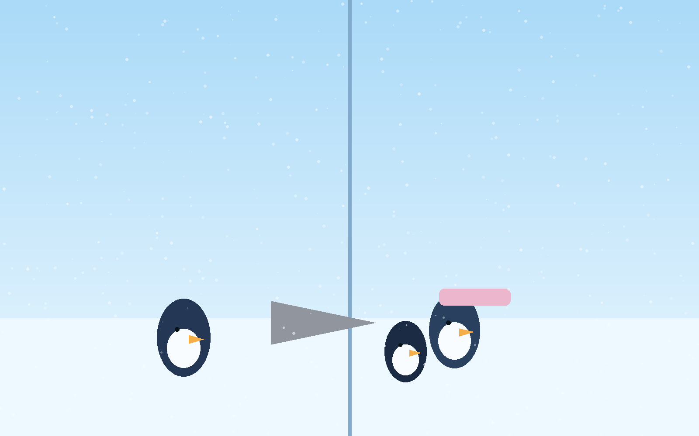

Snuggle in. This is a story about a penguin nobody stopped for, until someone did.
Pip, a small penguin from South Ridge, took a bad tumble on the Deep Powder Forest trail and landed in a cold snowdrift with a sore wing.
Two travelers passed by. Each noticed her. Each chose speed and schedule over kindness.
Then Barnaby Beaksworth came around the bend humming, saw Pip, and stopped immediately. No hesitation.
He helped her up, wrapped her in a blanket, shared cocoa and fish crackers, found her board, and walked her to Nora Snowmane's warm den.
When Pip whispered, "You didn't know me. You didn't have to stop," Barnaby answered, "Of course I stopped. You needed help."
Cozy landing: Kindness is rarely flashy, but it always leaves warmer tracks.
Illustrated Scenes
